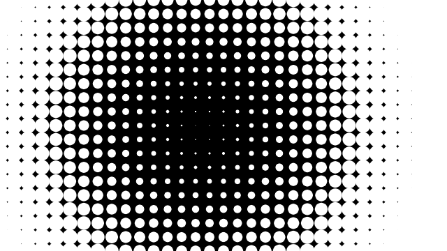

Segundo o documentário “Hello World! Processing“, algumas das propostas do processing são a possibilidade de experimentação e de visualização de dados.
Como se diz lá:
“
O propósito da computação é o insight, não os números.
”
Como primeira tarefa da disciplina, escolhi um dos exemplos disponíveis em processing.org/examples.
O exemplo escolhido foi Distance2D, disponível em https://processing.org/examples/distance2d.html.

Neste exemplo, desenhamos ellipses em toda a janela. Quanto mais próximo do mouse, menor elas ficam.
Senti um encomodo, como se falta-se algo!
Dando-lhe cor poderia ser um efeito mais atraente!
Resolvi adicionar uma imagem ao background. Assim não teriamos uma tela preta com círculos brancos, mudariamos o conceito do efeito! Ao mover o mouse descobre-se uma imagem ao fundo. Dando ao mesmo tempo um efeito de degradê e de movimento.
Quanto ao código:
Como se diz lá:
Como primeira tarefa da disciplina, escolhi um dos exemplos disponíveis em processing.org/examples.
O exemplo escolhido foi Distance2D, disponível em https://processing.org/examples/distance2d.html.
Neste exemplo, desenhamos ellipses em toda a janela. Quanto mais próximo do mouse, menor elas ficam.
Senti um encomodo, como se falta-se algo!
Dando-lhe cor poderia ser um efeito mais atraente!
Resolvi adicionar uma imagem ao background. Assim não teriamos uma tela preta com círculos brancos, mudariamos o conceito do efeito! Ao mover o mouse descobre-se uma imagem ao fundo. Dando ao mesmo tempo um efeito de degradê e de movimento.
Quanto ao código:
- Foi adicionado uma inicialização de variável;
PImage img;
- No Setup a variavel é carregada com a imagem;
img = LoadImage("js.jpg");
- No Draw o background é carregado com o conteúdo da variavel;
background(img);
- É importante frizar que a janela e a imagem possuam as mesmas dimensões!